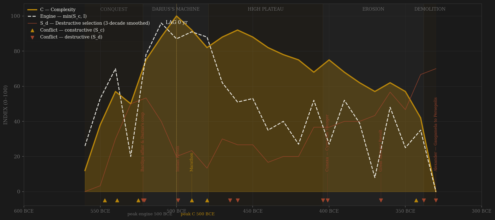
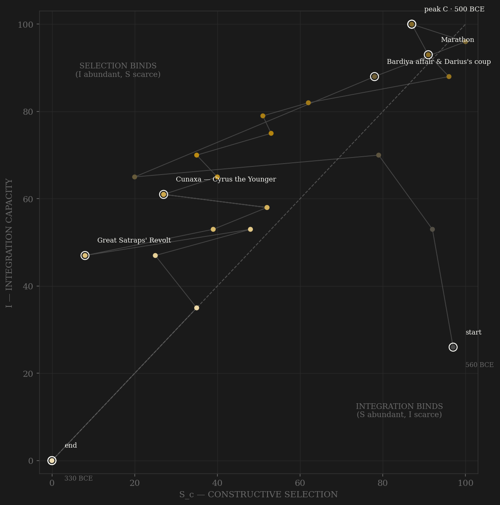

The Achaemenid arc compresses a whole imperial life-cycle into its first sixty years. Cyrus and Cambyses supply pure constructive pressure — Media, Lydia, Babylon, Egypt, peer states swallowed in sequence without the machinery ever turning on itself. The one convulsion that is internal, the Bardiya affair and Darius's coup of 522, nearly kills the empire in its cradle: every major satrapy in revolt inside a year. Darius's answer is the machine itself — twenty satrapies, the Royal Road, the daric, the postal relays — and integration climbs to its ceiling within two decades. The engine and complexity peak almost together at the turn of the fifth century: smoothed complexity crests around 500 BCE (Persepolis at full scale, the largest empire yet assembled), the smoothed engine a decade later on the Marathon–Salamis mobilizations. A ten-year gap is noise at this resolution — the honest verdict is SIMULTANEOUS, not a pass. What follows is the longest diminuendo in the sample: after 479 the constructive channel goes quiet — proxy subsidies in the Peloponnesian War, one reconquest of Egypt — while the destructive channel beats a slow drum of assassinations, secessions, and the Great Satraps' Revolt. Complexity declines by perhaps a fifth over 140 years; the machine was durable even unmaintained. Alexander does not defeat the system so much as decapitate it — Gaugamela, Persepolis burned, and a curve that had taken thirty years to build reaches zero in one row.

The phase portrait opens in the far selection-binds corner — maximum contest, minimal shared machinery, an army with a treasury attached — and moves almost straight up the integration axis as Darius converts conquest into administration: the steepest I-climb in the sample next to Song's. The path crosses the diagonal before 510 and never returns; from Marathon onward the Achaemenid problem is always slack pressure, never coordination. The long decline is a slow leftward-and-downward drift, selection decaying faster than integration — by the 440s constructive pressure touches zero while the Royal Road still runs, the phase-space signature of an empire with no peer left worth fighting and nothing internal renewing it. The Satraps' Revolt and the Bagoas poisonings drag both axes down without ever flipping the binding constraint. The trajectory dies pinned to the I=0 floor with residual contest still on the board — Alexander did not out-coordinate the empire into exhaustion; he tore the coordination axis out whole, Persepolis and its archive burned in a single row.
Coded by locus and target, never by outcome. The Achaemenid ledger front-loads its constructive entries: five of the first seven are peer conquests or the Greek wars — and the Greek defeats are S_c despite their outcome, because Marathon and Salamis were frontier contests that never touched the satrapal machine; the empire absorbed them structurally intact. The internal channel owns the founding crisis (Bardiya, the Behistun revolt wave) and everything after 465: Xerxes murdered by his own vizier, two kings poisoned by the eunuch Bagoas, Cyrus the Younger marching a Greek army to Cunaxa against his brother, the satraps in collective revolt in the 360s. Egypt is the instructive boundary case: its secession in 404 is S_d (a province tearing loose from the machine), but Artaxerxes III's reconquest in 343 is S_c — by then Egypt had been an independent rival for sixty years, and war against it was external by locus. Alexander closes the ledger under the Alaric rule: external origin, core-destroying target.
| YEAR | CONFLICT | CODE | CODING RATIONALE |
|---|---|---|---|
| 547 BCE | Conquest of Lydia | Sc | Croesus's kingdom absorbed — peer-state contest, the founding pattern |
| 539 BCE | Fall of Babylon | Sc | The last Mesopotamian peer taken without a siege; external contest, machinery untouched |
| 525 BCE | Cambyses takes Egypt | Sc | Peer conquest completing the Near Eastern set |
| 522 BCE | Bardiya affair & Darius's coup | Sd | Succession fratricide and a disputed throne — violence at the exact center of coordination |
| 521 BCE | Behistun revolt wave | Sd | Nineteen battles against his own satrapies in a year — the new king reconquering his own machine |
| 499 BCE | Ionian Revolt | Sd | Subject cities burn a satrapal capital (Sardis) — internal rising, Athenian aid notwithstanding |
| 490 BCE | Marathon | Sc | Frontier expedition defeated; coded by locus — the satrapal machine never engaged, let alone broke |
| 480 BCE | Xerxes in Greece — Salamis, Plataea | Sc | Maximum external mobilization; catastrophic outcome, external locus — the empire absorbed it structurally intact |
| 465 BCE | Assassination of Xerxes | Sd | The king murdered by his own vizier Artabanus; Artaxerxes I's succession purge |
| 460 BCE | Inaros revolt in Egypt | Sd | Province in arms with Athenian expeditionary backing; internal locus, six years to suppress |
| 404 BCE | Egypt secedes | Sd | The richest satrapy tears loose for sixty years — subtraction of the machine, no battle required |
| 401 BCE | Cunaxa — Cyrus the Younger | Sd | The king's brother marches ten thousand Greeks into Babylonia for the throne — succession fratricide at scale |
| 366 BCE | Great Satraps' Revolt | Sd | The satrapal coordination layer itself in collective rebellion — the purest S_d in the ledger |
| 343 BCE | Artaxerxes III retakes Egypt | Sc | War against a state independent for sixty years — external by locus, whatever the map once said |
| 338 BCE | Bagoas poisons Artaxerxes III | Sd | The vizier kills two kings in three years — the court decapitating itself as Macedon rises |
| 330 BCE | Alexander — Gaugamela to Persepolis | Sd | External origin, core-destroying locus: the capital burned, the king murdered by his own satrap |
| COMPONENT | GRADE | BASIS |
|---|---|---|
| S — Selection (gross) | ○ scholar-coded | Decade ordinals from Briant (2002) From Cyrus to Alexander; Wiesehöfer (2001); campaign chronology cross-checked against Kuhrt (2007) corpus |
| S_c / S_d — decomposed (v1, frozen) | ○ scholar-coded | Locus-and-target coding added at the dynasty split, 0–10 ordinals → 0–100 within dynasty; per-decade rationales in coding_ledger.csv. Kept as Sc_v1_combat per the v2 amendment |
| S_c v2 — contestability composite | ○ scholar-coded | 0.40 elite-entry (satrapal appointment contestability + King's Eye inspectorate, Briant 2002 ch.9; multi-ethnic elite incorporation — Persepolis Fortification Tablets ration Elamite/Babylonian/Ionian/Egyptian specialists, Henkelman 2008; subject-elite advancement: Harpagus, Udjahorresnet, Datis, Themistocles, Mentor/Memnon) + 0.30 external rivalry (HARD CAP; the v1 locus-cleaned war ordinal) + 0.30 within-rules court politics (the Seven's consultative bargain, royal arbitration of satrapal rivalries, King's Peace diplomacy). Default 0.4/0.3/0.3 weights, no deviation. Rationales in coding_ledger_v2.csv |
| I — Integration | ○ scholar-coded | Royal Road density, satrapal administration, tolerance policy, Aramaic chancellery — coded from Kuhrt (2007), Canepa (2018); Persepolis Fortification Tablets anchor c.509–493 only |
| C — Complexity | ○ scholar-coded | Architectural output (Pasargadae, Persepolis, Susa), coinage, infrastructure — Henkelman (2008), Briant (2002); no measured economic series exists |
| R — Renewal | ○ estimates | McEvedy & Jones (1978) empire population, millions; near-flat 17–20M after 500 BCE — carries little signal |
| E — Entropy | ○ scholar-coded | Satrapal-autonomy and succession-crisis ordinals; Briant (2002); Greek narrative sources are hostile witnesses for the late period |
24 decade rows, 560–330 BCE, carved from the deprecated three-dynasty persia composite by build_persia_split_sicre.py (the lumped file returned a meaningless +1040yr Achaemenid-engine-to-Sasanian-C lag). All 0–100 columns re-min-max-normalized within dynasty; Sc/Sd added by locus-and-target coding (ledger in coding_ledger.csv). S_c v2 AMENDMENT (2026-07-06): Sc_constructive is now the contestability composite (0.40 elite-entry + 0.30 external-rivalry hard cap + 0.30 within-rules politics); the combat series is frozen as Sc_v1_combat, channel rationales in coding_ledger_v2.csv. Frozen-protocol lags under BOTH definitions: v1 combat — engine 490s BCE, C 500s BCE, lag −10 SIMULTANEOUS; v2 contestability — engine 500s BCE (Darius's appointment machine + PFT-era multi-ethnic incorporation), C 500s BCE, lag +0 SIMULTANEOUS. No verdict flip: both definitions land SIMULTANEOUS — at ±10yr this grid cannot distinguish engine-leads from engine-coincident, and the verdict is not massaged toward a pass. Grade ○ throughout — hand-coded ordinals on Greek-biased narrative sources. Rebuild: build_persia_split_sicre.py, then polity_report.py --slug achaemenid